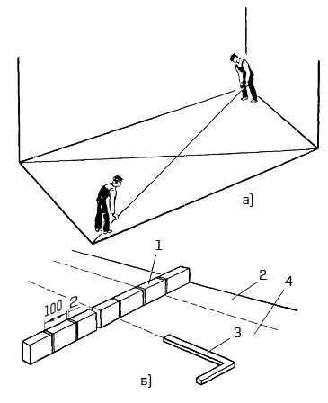

-

8(0152)31-25-61
-

kst@ggkst.by
-

http://ggkst.by
8(0152)31-25-61
kst@ggkst.by
http://ggkst.by
Карта 4: Разбивка покрытия пола
Состав технологических операций. Проверка геометрической формы покрытия; разбивка элементов покрытия.
Рис. 1. Разбивка прямоугольного покрытия пола: а - выверка геометрической формы помещения, б - разметка заделки и фриза; 1 - рейка-шаблон Болотина, 2 - заделка, 3 - угольник, 4 - фриз
Инструменты и приспособления. Разметочный шнур в корпусе; рулетка; складной метр; рейка-шаблон Болотина; рейка-правило; уровень;
угольник; стальные штыри для закрепления шнура; цветные мелки или грифель; карандаш.
Схема организации рабочего места. Рабочее место - помещение, где производится разбивка покрытия пола, должно быть свободно от посторонних предметов.
Рис. 2. Разбивка непрямоугольного покрытия пола: 1 - участок с прирубленными плитками, 2 - фон пола, 3 - фриз, 4 - заделка
Последовательность выполнения технологических операций. К работе приступают после исправления дефектов, проверки ровности и горизонтальности основания.
Проверка геометрической формы помещения. Натянутым шнуром измеряют диагонали помещения (рис. 1, а). Равенство диагоналей свидетельствует о взаимной
перпендикулярности примыкающих сторон. В таком помещении фриз отделяет ряды заделки одинаковой ширины по всему периметру стен.
Разбивка прямоугольного покрытия (заделки, фриза, фона). Разметочную рейку-шаблон Болотина 1 (рис. 1, б) прикладывают торцом к стене.
Цветным мелком наносят риски, намечая границы расположения рядов заделки 2 и фриза 4. Направление внутренней стороны фризового ряда определяют по угольнику 3.
Внутренние вершины фризовых рядов (кратных целому ряду плиток) закрепляют стальными штырями.
Разбивка непрямоугольного покрытия (рис. 2). В непрямоугольном помещении диагонали не равны. Рулеткой измеряют длину коротких противоположных сторон основания.
Их середину закрепляют стальными штырями и натягивают шнур, фиксирующий ось будущего покрытия. Вдоль натянутого шнура прикладывают рейку Болотина и цветным мелком
намечают границы рядов плиток, равных ширине заделки и фриза.
Направление внутренней короткой стороны фризового ряда определяют угольником относительно оси покрытия пола. Размеры коротких сторон фризового ряда кратны целому
числу плиток. Внутренние углы фриза закрепляют стальными штырями. Все отклонения от прямоугольности основания при такой разбивке окажутся вне поля фона 2 и за
фризом 3 - в полосе заделки 4. Их выравнивают прирубленными (неполномерными) плитками 1, примыкающими к стене.
Неполномерные плитки располагают со стороны входа в помещение.
При разбивке основания нужно учитывать, что покрытие может быть выполнено по заданному рисунку.
Контроль качества. Точность разбивки покрытия пола в помещениях правильной и неправильной формы контролируют,
проверяя равенство диагоналей по внутренним углам фриза.
Техника безопасности. Работа должна выполняться в хорошо освещенных помещениях, свободных от посторонних предметов и материалов.
Контрольные вопросы. Как проверить прямоугольность основания при устройстве покрытия пола? Каковы особенности разметки прямоугольных покрытий? Сколько рядов плитки должно быть в фризовом ряду, заделке? В какой последовательности выполняют разметку покрытий неправильной формы? Где располагают прирубленные ряды заделки?
Карта 5 — Устройство маяков